Zagadki
Mamy do dyspozycji 3 pojemniki. Jeden z nich ma pojemność 8 litrów i jest cały
wypełniony sokiem. Pozostałe dwa naczynia są puste i ich pojemność wynosi odpowiednio 5 i 3 litry.
Żaden pojemnik nie jest wyskalowany. W jaki sposób - przelewając sok pomiędzy naczyniami - można
sprawić, aby w naczyniu 8 litrowym i 5 litrowym znalazły się po 4 litry soku?
W pewnym momencie dwie planety i gwiazda (dookoła której krążą owe planety)
ustawiły się w jednej linii. Pierwsza planeta obiega gwiazdę w ciągu 2 lat, a druga z nich w ciągu 4
lat. Po ilu latach wszystkie trzy ciała niebieski ustawią się ponownie w jednej linii?
Po 2 latach.
Trzech przyjaciół postanowiło uregulować w równych częściach koszt zjedzonej razem
kolacji. Kelner obliczył rachunek na sumę 60 złotych, więc każdy z nich zapłacił 20 złotych.
Przy przyjmowaniu pieniędzy do kasy kasjer stwierdził, że koszt kolacji jest za wysoki i polecił kelnerowi zwrócić 10 złotych. Nieuczciwy kelner schował do kieszeni 4 złote i oddał tylko po 2 złote każdemu z trzech przyjaciół.
W ten sposób każdy z nich zapłacił po 18 złotych i wobec tego całkowita suma, którą zapłacili, wynosiła 54 złote. Było to więc o 6 złotych mniej, niż wydali pierwotnie. Kelner wziął sobie tylko 4 złote. Co się stało z pozostałymi dwoma złotymi?
Przy przyjmowaniu pieniędzy do kasy kasjer stwierdził, że koszt kolacji jest za wysoki i polecił kelnerowi zwrócić 10 złotych. Nieuczciwy kelner schował do kieszeni 4 złote i oddał tylko po 2 złote każdemu z trzech przyjaciół.
W ten sposób każdy z nich zapłacił po 18 złotych i wobec tego całkowita suma, którą zapłacili, wynosiła 54 złote. Było to więc o 6 złotych mniej, niż wydali pierwotnie. Kelner wziął sobie tylko 4 złote. Co się stało z pozostałymi dwoma złotymi?
Mamy 12 starych monet. Wiemy, że jedna z nich jest fałszywa - nieco cięższa lub
nieco lżejsza od pozostałych, prawdziwych monet. Dysponujemy także dwuszalkową, precyzyjną wagą bez
odważników.
W jaki sposób, za pomocą jedynie trzech ważeń, możemy wykryć monetę fałszywą? Czy jesteśmy w stanie stwierdzić, czy fałszywa moneta jest lżejsza, czy cięższa od pozostałych?
W jaki sposób, za pomocą jedynie trzech ważeń, możemy wykryć monetę fałszywą? Czy jesteśmy w stanie stwierdzić, czy fałszywa moneta jest lżejsza, czy cięższa od pozostałych?
Ilu tragarzy powinien wynająć i jak postępować podróżny, który chce przejść przez
pustynię, jeśli droga przez nią trwa sześć dób, każdy zaś z tragarzy i sam podróżnik mogą unieść
racje żywności i wody dla jednej osoby tylko na cztery dni wędrówki?
Podróżny powinien wynająć tylko dwóch tragarzy (wędrowcy zabiorą więc
ze sobą łącznie 12 racji żywności i wody). Jeden tragarz wraca do punktu wyjścia już po pierwszym
dniu podróży (a więc zużyje tylko 2 racje). Drugi tragarz zacznie wracać po dwóch dniach (a więc
zużyje 4 racje). Tragarze zużyją więc 6 racji, a podróżny pozostałe 6 w ciągu 6 dni podróży.
Mamy do dyspozycji dwa sznurki i dwie zapałki. Oba sznurki palą się nierównomiernie
(tzn. niektóre ich fragmenty palą się szybciej, a inne wolniej), jednak całkowity czas spalania
każdego sznurka wynosi 1 godzinę. W jaki sposób mając do dyspozycji ten właśnie sprzęt możemy
odmierzyć 15 minut?
Jak za pomocą klepsydry trzyminutowej i dziesięciominutowej odmierzyć 5 minut?
Jak za pomocą klepsydry siedmiominutowej i jedenastominutowej odmierzyć 5 minut?
W pewnym więzieniu zostało osadzonych 100 groźnych przestępców. Każdy z nich ma
przypisany numer odpowiednio od 1 do 100. Nadzorca więzienia zaproponował więźniom pewną grę.
W pewnej celi umieścił 100 ponumerowanych pudełek. Następnie całkowicie losowo rozłożył w nich 100 etykietek z numerami więźniów i złożył skazanym następującą propozycję.
Każdy z więźniów może wejść do celi z pudełkami i zajrzeć do 50 pudełek, następnie musi udać się bezpośrednio do wyizolowanej celi, nie mogąc skontaktować się z pozostałymi więźniami. Jeżeli każdy ze 100 więźniów odnajdzie swój numer (podczas 50 prób), to wszyscy więźniowie wychodzą na wolność. Jeśli jednak chociaż jeden się pomyli, to wszyscy zostają natychmiast skazani na karę śmierci. Jedyne co mogą zrobić więźniowie, to ustalić pewną strategię przeszukiwania pudełek, zanim zaczną wchodzić do celi. Jaką strategię powinni obrać więźniowie, żeby zmaksymalizować swoje szanse? Ile wyniesie wówczas prawdopodobieństwo ich przeżycia?
W pewnej celi umieścił 100 ponumerowanych pudełek. Następnie całkowicie losowo rozłożył w nich 100 etykietek z numerami więźniów i złożył skazanym następującą propozycję.
Każdy z więźniów może wejść do celi z pudełkami i zajrzeć do 50 pudełek, następnie musi udać się bezpośrednio do wyizolowanej celi, nie mogąc skontaktować się z pozostałymi więźniami. Jeżeli każdy ze 100 więźniów odnajdzie swój numer (podczas 50 prób), to wszyscy więźniowie wychodzą na wolność. Jeśli jednak chociaż jeden się pomyli, to wszyscy zostają natychmiast skazani na karę śmierci. Jedyne co mogą zrobić więźniowie, to ustalić pewną strategię przeszukiwania pudełek, zanim zaczną wchodzić do celi. Jaką strategię powinni obrać więźniowie, żeby zmaksymalizować swoje szanse? Ile wyniesie wówczas prawdopodobieństwo ich przeżycia?
Pewna wyspa ma kształt kwadratu i jest otoczona rowem o szerokości 10 metrów. W
jaki sposób można się na nią przedostać mając do dyspozycji tylko i wyłącznie 2 wytrzymałe deski, z
których każda ma długość 9 metrów i szerokość 0,5 metra?
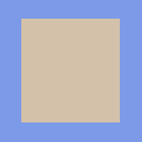
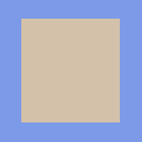
Na wsi, przed domem pewnego farmera stała beczka. Na ogół była ona pusta i nikt się
nią nie interesował. Pewnej nocy spadł bardzo obfity deszcz. Z rana okazało się że beczka się
znacznie napełniła. Jedni twierdzili że jest w niej więcej jak połowa wody, drudzy zaś że mniej. W
jaki sposób szybko i bez użycia żadnych przyrządów mierniczych można się przekonać która strona ma
rację?
Przechylamy beczkę próbując zobaczyć jej dno. Jeśli jest to możliwe
(bez wylania się wody z beczki), to w beczce jest mniej niż połowa wody. W przeciwnym przypadku w
beczce jest więcej niż połowa wody.
Na rozstaju dróg stoi dwóch braci bliźniaków. Jeden z nich zawsze mówi prawdę,
drugi zaś zawsze kłamie. Wiadomo, że jedna z dróg prowadzi do miasta, a druga na bagna. Jakie
pytanie ma zadać podróżny który chce dotrzeć do miasta, jeśli może zapytać tylko raz i tylko jednego
z braci?
Którą drogę do miasta wskazałby mi twój brat?
Po takim pytaniu każdy z braci wskaże drogę na bagna.
Po takim pytaniu każdy z braci wskaże drogę na bagna.
Pewien kupiec ma wilka, kozę i kapustę. Musi się on przeprawić przez rzekę i ma do
dyspozycji jedną łódkę, do której może wejść w jednym momencie tylko on sam i jeden z przewożonych
towarów. Wiadomo, że koza zje kapustę, a wilk kozę, gdy tylko któraś z tych par zostanie bez opieki.
W jaki sposób kupiec ma pokonać rzekę nie tracąc przy tym żadnego z przewożonych towarów?
5 pająków zjada 5 much w 5 minut. W jakim czasie 50 pająków zje 50 much?
W 5 minut.
(jeden pająk zjada jedną muchę w 5 minut)
(jeden pająk zjada jedną muchę w 5 minut)
Z tych samych czterech elementów ułożono dwa trójkąty na dwa różne sposoby. Jak
wyjaśnić pojawienie się dziury w drugim trójkącie? 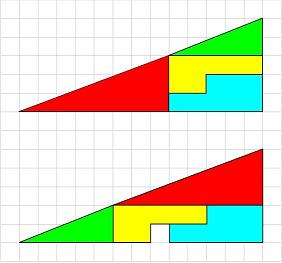
Pewien kierowca TIR-a ma brata, a brat kierowcy TIR-a nie ma brata. Jak to możliwe?
Jaki jest następny wyraz w ciągu?
4, 8, 15, 30, 37, 74, ?
4, 8, 15, 30, 37, 74, ?
81
(kolejne wyrazy ciągu na zmianę mnożymy przez 2 i dodajemy liczbę 7)
(kolejne wyrazy ciągu na zmianę mnożymy przez 2 i dodajemy liczbę 7)
Na kratkowanym papierze zaznaczono 9 punktów tak jak pokazano na obrazku
poniżej.
W jaki sposób należy narysować 4 odcinki nie odrywając ręki od papieru, żeby wszystkie punkty zostały połączone? 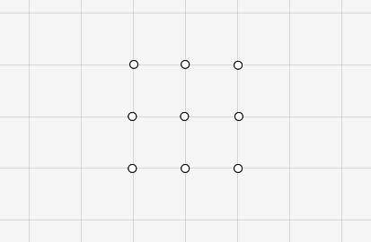
W jaki sposób należy narysować 4 odcinki nie odrywając ręki od papieru, żeby wszystkie punkty zostały połączone? 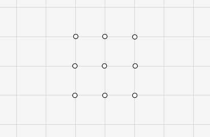
Dwie monety dają łącznie siedem złotych, pomimo że jedna z nich nie jest
dwuzłotówką. Jak to możliwe?
Cegła waży kilogram i pół cegły. Ile waży cegła?
Cegła waży 2 kilogramy.
(równanie: x = 1 + 0,5⋅x)
(równanie: x = 1 + 0,5⋅x)
Autostrada omija miasta A i B. Planuje się wykonanie wspólnego zjazdu z autostrady
do obu miast. W którym miejscu należy go zbudować, aby łączna długość dwóch dróg dojazdowych do A i
B była najmniejsza?
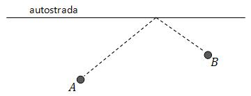
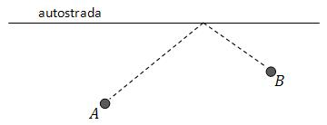
Oddział żołnierzy doszedł do rzeki, przez którą koniecznie musi się przeprawić.
Most po niedawnej powodzi jest jeszcze w ruinie, rzeka zaś zbyt głęboka, by próbować przebrnąć ją w
bród. W małej łódce u brzegu rzeki bawią się dwaj chłopcy. Łódka jest tak maleńka, że zaledwie jeden
żołnierz mógłby się w niej pomieścić. Mimo to ta właśnie łódka przy czynnym udziale chłopców
przewiozła na drugą stronę rzeki cały oddział żołnierzy. Jak się to stało?
Sprzedawczyni spółdzielni spożywców opowiadała taką – zdawałoby się – niewiarygodną
historię:
- Dzisiaj rano pierwsza klientka kupiła połowę wszystkich jajek i
jeszcze pół jajka, druga kupiła połowę pozostałych jajek i znów pół jajka. Trzecia kupiła połowę
pozostałych jajek i znów pół jajka – tak samo było z czwartą, piątą i szóstką klientką.
- Opowiada pani niestworzone rzeczy! Komu by pani sprzedała pół jajka!
Tu wtrącił się
do rozmowy student mówiąc:- Opowiada pani niestworzone rzeczy! Komu by pani sprzedała pół jajka!
- Ja byłem siódmym klientem. Kupiłem połowę całego zapasu jajek i
jeszcze pół jajka.
Na to sprzedawczyni: - Pamiętam, tak było! Pan kupił ostatnie jajko!
Jak to było
możliwe, jeśli nikt z klientów nie kupował połówek jajek? Ile jajek było na początku?
Ile trójkątów jest na tym rysunku? 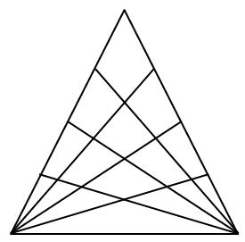
64 trójkąty
Ile jest dróg od startu do mety? 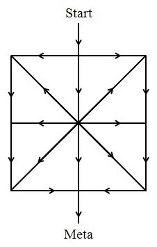
Jest 25 dróg.
Jaki jest następny wyraz tego ciągu?
28, 30, 32, 33, 34, 35, 36, 38, ?
28, 30, 32, 33, 34, 35, 36, 38, ?
Jest to liczba 39 - jako kolejna liczba złożona.
Na pastwisku pasą się krowy, owce i kaczki. Owiec jest więcej niż kaczek. Owce i
kaczki mają łącznie sto głów i nóg i jest ich łącznie trzy razy więcej niż krów.
Ile krów pasie się na pastwisku?
Ile krów pasie się na pastwisku?
Na pastwisku pasie się 8 krów.
Marek wypija baryłkę piwa w 15 dni, a Jacek w 20 dni.
Jeżeli obydwaj będą pili piwo z jednej baryłki - każdy w swoim tempie - to ile czasu zajmie im opróżnienie baryłki?
Jeżeli obydwaj będą pili piwo z jednej baryłki - każdy w swoim tempie - to ile czasu zajmie im opróżnienie baryłki?
W ciągu jednego dnia Marek wypija 1/15 baryłki, a Jacek 1/20. Razem
wypijają 1/15 + 1/20 = 7/60 baryłki. A więc całą baryłkę wypiją w 60/7 dnia, czyli około 8,5 dnia.
- Ile waży ten worek ziemniaków? - zapytał klient.
- 50 kilogramów podzielone przez połowę jego wagi - odparł sprzedawca.
Ile ważył worek ziemniaków?
- 50 kilogramów podzielone przez połowę jego wagi - odparł sprzedawca.
Ile ważył worek ziemniaków?
Worek ważył 10 kilogramów. Połowa jego wagi to 5 kilogramów, a 50 : 5 =
10.
Czy można szybko obliczyć - bez wykonywania żadnych rachunków pisemnych - jaka jest
suma wszystkich liczb od 1 do 1000 włącznie?
Tak - ta suma wynosi 500500.
Mamy dwie szklanki: jedną z wodą, drugą z mlekiem.
Łyżkę mleka przelewamy do szklanki z wodą, a następnie dokładnie mieszamy. Następnie łyżkę tej mieszanki przelewamy do szklanki z mlekiem.
Czego jest więcej: wody w mleku, czy mleka w wodzie?
Łyżkę mleka przelewamy do szklanki z wodą, a następnie dokładnie mieszamy. Następnie łyżkę tej mieszanki przelewamy do szklanki z mlekiem.
Czego jest więcej: wody w mleku, czy mleka w wodzie?
Zawartości obu szklanek (mleka w wodzie i wody w mleku) są identyczne.
Ojciec i syn jechali samochodem. Samochód uległ wypadkowi. Ojciec zginął na
miejscu, a ciężko rannego syna zawieziono natychmiast do szpitala. W sali operacyjnej chirurg patrzy
na niego i mówi: "Nie mogę go operować. To mój syn!".
Jak to można wyjaśnić?
Jak to można wyjaśnić?
Chirurgiem była matka rannego chłopca.
Dwóch zawodników ściga się na dystansie 100 metrów. Wygrywa zawodnik A, z przewagą
10 metrów. Aby wyrównać szanse, w następnym wyścigu A staje 10 metrów przed linią startu, dając tym
samym zawodnikowi B 10 metrów forów. Odbywa się drugi wyścig, w którym obydwaj biegną z taką samą
prędkością jak poprzednio.
Kto wygra?
Kto wygra?
Ponownie wygra zawodnik A.
Z pierwszego wyścigu wynika, że zawodnik A przebiegnie 100 metrów w tym samym czasie, co zawodnik B 90 metrów. W drugim wyścigu zawodnik A po przebiegnięciu 100 metrów będzie miał do mety jeszcze 10 metrów, ale dogoni w tym momencie zawodnika B, który przebiegnie w tym czasie tylko 90 metrów. Na ostatnich 10 metrach zawodnik A, który biegnie szybciej, przegoni zawodnika B i wygra.
Z pierwszego wyścigu wynika, że zawodnik A przebiegnie 100 metrów w tym samym czasie, co zawodnik B 90 metrów. W drugim wyścigu zawodnik A po przebiegnięciu 100 metrów będzie miał do mety jeszcze 10 metrów, ale dogoni w tym momencie zawodnika B, który przebiegnie w tym czasie tylko 90 metrów. Na ostatnich 10 metrach zawodnik A, który biegnie szybciej, przegoni zawodnika B i wygra.
Pewien hodowca miał duże stado kucyków. Zapytany kiedyś o ich liczbę, odpowiedział:
"Czwarta część liczby moich kucyków dodana do ich trzeciej części to o dziesięć kucyków więcej niż
połowa całego mojego stada".
Ile kucyków miał hodowca?
Ile kucyków miał hodowca?
Hodowca miał 120 kucyków.
Mamy 5 złotych monet, wśród których 3 są prawdziwe, a 2 fałszywe. Wszystkie monety
prawdziwe mają jednakową wagę. Jedna z monet fałszywych jest lżejsza, a druga cięższa od monety
prawdziwej.
W celu wykrycia fałszywych monet możemy posłużyć się dwuszalkową wagą bez odważników.
W jaki sposób za pomocą trzech i tylko trzech ważeń można określić, które z pięciu monet są fałszywe oraz która z monet fałszywych jest lżejsza, a która cięższa od monety prawdziwej?
W celu wykrycia fałszywych monet możemy posłużyć się dwuszalkową wagą bez odważników.
W jaki sposób za pomocą trzech i tylko trzech ważeń można określić, które z pięciu monet są fałszywe oraz która z monet fałszywych jest lżejsza, a która cięższa od monety prawdziwej?
W pierwszym ważeniu na szalki wagi kładziemy po jednej monecie. Jeśli
jest równowaga - oznaczamy obydwie monety jako P (prawdziwe). Jeśli nie ma równowagi - oznaczamy
lżejszą monetę jako L1 (lżejsza w pierwszym ważeniu), a monetę cięższą jako C1 (cięższa w pierwszym
ważeniu).
W drugim ważeniu na szalki wagi również kładziemy po jednej monecie (z trzech pozostałych do ważenia). Jeśli jest równowaga - oznaczamy obydwie monety jako P (prawdziwe). Jeśli nie ma równowagi - oznaczamy lżejszą monetę jako L2 (lżejsza w drugim ważeniu), a monetę cięższą jako C2 (cięższa w drugim ważeniu).
Po pierwszych dwóch ważeniach mamy więc jeden z trzech przypadków:
1. P, P, L2, C2
2. L1, C1, P, P
3. L1, C1, L2, C2
Jeśli zaszedł przypadek 1 lub 2 - ważymy jedną z monet P z ostatnią, pozostałą do zważenia, piątą monetą.
Jeśli w tym ważeniu jest równowaga, wówczas moneta oznaczona jako L2 (w przypadku 1) lub L1 (w przypadku 2) jest fałszywa i lżejsza, a oznaczona jako C2 (w przypadku 1) lub C1 (w przypadku 2) fałszywa i cięższa. Jeśli natomiast w tym ważeniu nie ma równowagi, to wiadomo, że ostatnia, piąta moneta jest fałszywa. Gdy jest cięższa od prawdziwej, wówczas drugą fałszywą monetą jest ta oznaczona wcześniej jako L (L2 w przypadku 1 lub L1 w przypadku 2). Gdy natomiast jest lżejsza - drugą fałszywą monetą jest ta oznaczona wcześniej jako C (C2 w przypadku 1 lub C1 w przypadku 2).
Jeśli po dwóch ważeniach zaszedł przypadek 3 - do trzeciego ważenia bierzemy monety oznaczone jako L1 i L2 (lżejsze). Jeżeli L1 będzie lżejsza - wówczas L1 jest fałszywa i lżejsza (a C2 - fałszywa i cięższa), zaś gdy L2 będzie lżejsza - to ona będzie fałszywa i lżejsza (a C1 - fałszywa i cięższa).
Trzecie ważenie w przypadku 3 można wykonać również wykorzystując monety oznaczone jako C1 i C2, a analizę przeprowadzić analogicznie jak w przypadku monet L1 i L2.
W drugim ważeniu na szalki wagi również kładziemy po jednej monecie (z trzech pozostałych do ważenia). Jeśli jest równowaga - oznaczamy obydwie monety jako P (prawdziwe). Jeśli nie ma równowagi - oznaczamy lżejszą monetę jako L2 (lżejsza w drugim ważeniu), a monetę cięższą jako C2 (cięższa w drugim ważeniu).
Po pierwszych dwóch ważeniach mamy więc jeden z trzech przypadków:
1. P, P, L2, C2
2. L1, C1, P, P
3. L1, C1, L2, C2
Jeśli zaszedł przypadek 1 lub 2 - ważymy jedną z monet P z ostatnią, pozostałą do zważenia, piątą monetą.
Jeśli w tym ważeniu jest równowaga, wówczas moneta oznaczona jako L2 (w przypadku 1) lub L1 (w przypadku 2) jest fałszywa i lżejsza, a oznaczona jako C2 (w przypadku 1) lub C1 (w przypadku 2) fałszywa i cięższa. Jeśli natomiast w tym ważeniu nie ma równowagi, to wiadomo, że ostatnia, piąta moneta jest fałszywa. Gdy jest cięższa od prawdziwej, wówczas drugą fałszywą monetą jest ta oznaczona wcześniej jako L (L2 w przypadku 1 lub L1 w przypadku 2). Gdy natomiast jest lżejsza - drugą fałszywą monetą jest ta oznaczona wcześniej jako C (C2 w przypadku 1 lub C1 w przypadku 2).
Jeśli po dwóch ważeniach zaszedł przypadek 3 - do trzeciego ważenia bierzemy monety oznaczone jako L1 i L2 (lżejsze). Jeżeli L1 będzie lżejsza - wówczas L1 jest fałszywa i lżejsza (a C2 - fałszywa i cięższa), zaś gdy L2 będzie lżejsza - to ona będzie fałszywa i lżejsza (a C1 - fałszywa i cięższa).
Trzecie ważenie w przypadku 3 można wykonać również wykorzystując monety oznaczone jako C1 i C2, a analizę przeprowadzić analogicznie jak w przypadku monet L1 i L2.
Andrzej twierdzi, że Bartek kłamie. Bartek twierdzi, że Czarek kłamie. Czarek
twierdzi, że Andrzej i Bartek kłamią.
Który z chłopców kłamie, który zaś mówi prawdę?
Który z chłopców kłamie, który zaś mówi prawdę?
Załóżmy, że Andrzej mówi prawdę. Wówczas Bartek kłamie, a więc Czarek
mówi prawdę. Jeśli jednak Czarek mówi prawdę, to wówczas Andrzej powinien kłamać, a przecież
założyliśmy, że mówi prawdę. Mamy więc sprzeczność - nasze założenie było fałszywe.
Wynika z tego, że Andrzej kłamie. Skoro Andrzej kłamie - Bartek mówi prawdę. W takiej sytuacji Czarek też kłamie, bo przecież powiedział, że Andrzej i Bartek kłamią - a Bartek przecież mówi prawdę.
Ostatecznie możemy więc stwierdzić, że Andrzej i Czarek kłamią, a Bartek mówi prawdę.
Wynika z tego, że Andrzej kłamie. Skoro Andrzej kłamie - Bartek mówi prawdę. W takiej sytuacji Czarek też kłamie, bo przecież powiedział, że Andrzej i Bartek kłamią - a Bartek przecież mówi prawdę.
Ostatecznie możemy więc stwierdzić, że Andrzej i Czarek kłamią, a Bartek mówi prawdę.
Z Krakowa do Wrocławia wyjeżdża pociąg A. Godzinę później z Wrocławia do Krakowa
wyjeżdża pociąg B. Oba pociągi jadą z taką samą prędkością.
Który z pociągów będzie bliżej Krakowa, gdy się spotkają?
Który z pociągów będzie bliżej Krakowa, gdy się spotkają?
Oba pociągi będą w tej samej odległości - przecież właśnie się
spotkały.
Czterej biegacze przed startem przebrali się w stroje sportowe: lekkie koszulki i
spodenki. Mieli do wyboru cztery komplety takich strojów w różnych kolorach: białym, czerwonym,
niebieskim i zielonym.
Żaden z biegaczy nie włożył koszulki i spodenek tego samego koloru.
Andrzej włożył czerwone spodenki.
Bolek włożył spodenki tego samego koloru, co koszulka Darka, a więc nie zielone.
Czarek stanął na starcie w niebieskich spodenkach.
Darek włożył spodenki tego samego koloru, co koszulka Andrzeja.
Jakiego koloru koszulkę i spodenki miał każdy z biegaczy?
Żaden z biegaczy nie włożył koszulki i spodenek tego samego koloru.
Andrzej włożył czerwone spodenki.
Bolek włożył spodenki tego samego koloru, co koszulka Darka, a więc nie zielone.
Czarek stanął na starcie w niebieskich spodenkach.
Darek włożył spodenki tego samego koloru, co koszulka Andrzeja.
Jakiego koloru koszulkę i spodenki miał każdy z biegaczy?
Andrzej miał czerwone spodenki i zieloną koszulkę, Bolek białe spodenki
i niebieską koszulkę, Czarek niebieskie spodenki i czerwoną koszulkę, a Darek zielone spodenki i
białą koszulkę.
Poniższy trójkąt składa się z 10 monet.
Ile co najmniej monet należy przełożyć, aby powstał identyczny trójkąt skierowany w dół? 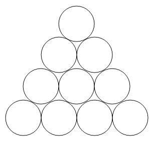
Ile co najmniej monet należy przełożyć, aby powstał identyczny trójkąt skierowany w dół? 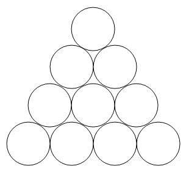
Wystarczy przełożyć 3 monety: 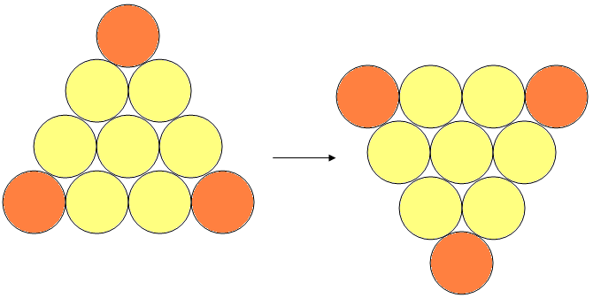
Pewien mężczyzna popełnił przestępstwo zagrożone karą śmierci. Ma on wygłosić
zdanie, od którego zależy, jaka spotka go kara. Jeśli zdanie będzie prawdziwe - zostanie utopiony, a
jeśli fałszywe - powieszony.
Czy jest takie zdanie, które uniemożliwi katowi zarówno utopienie, jak i powieszenie skazanego?
Czy jest takie zdanie, które uniemożliwi katowi zarówno utopienie, jak i powieszenie skazanego?
Tak. Wystarczy, że skazany powie: "Zostanę powieszony."
Jeśli zdanie miałoby być prawdziwe - powinien zostać utopiony. A przecież wówczas zdanie okazałoby się fałszywe i powinien zostać powieszony. Ale wtedy zdanie byłoby prawdziwe, więc powinien zostać utopiony. A wówczas... I tak w kółko...
Jeśli zdanie miałoby być prawdziwe - powinien zostać utopiony. A przecież wówczas zdanie okazałoby się fałszywe i powinien zostać powieszony. Ale wtedy zdanie byłoby prawdziwe, więc powinien zostać utopiony. A wówczas... I tak w kółko...
Ile trójkątów jest na tym rysunku? 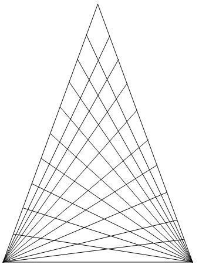
Na rysunku jest łącznie 1000 trójkątów.
(9 + 1)3 = 1000
(9 + 1)3 = 1000
Oto odejmowanie, w którym zachowały się tylko trzy czytelne cyfry:
9xx - x4x = xx1Znak x oznacza nieczytelną cyfrę.
Dodatkowo wiadomo, że w tym odejmowaniu nie występują dwie jednakowe cyfry i ani razu nie występuje zero.
Jak wygląda całe odejmowanie?
Uwaga: zadanie to ma dwa różne prawidłowe rozwiązania.
9xx - x4x = xx1Znak x oznacza nieczytelną cyfrę.
Dodatkowo wiadomo, że w tym odejmowaniu nie występują dwie jednakowe cyfry i ani razu nie występuje zero.
Jak wygląda całe odejmowanie?
Uwaga: zadanie to ma dwa różne prawidłowe rozwiązania.
927 - 346 = 581 lub 927 - 546 = 381
Pewna czterocyfrowa liczba jest podzielna przez 3 i przez 5. Pierwsza i druga jej
cyfra tworzą liczbę 4 razy mniejszą od liczby utworzonej przez trzecią i czwartą cyfrę.
Co to za liczba?
Co to za liczba?
Ta liczba to 1560.
Pewien chłopiec ma dwa razy więcej braci niż sióstr, a jego siostra - pięć razy
więcej braci niż sióstr.
Ile dzieci mają ich rodzice?
Ile dzieci mają ich rodzice?
Dzieci jest siedmioro: pięciu braci i dwie siostry.
Jak za pomocą klepsydry czterominutowej i siedmiominutowej odmierzyć 9 minut?
Myśliwy chciał zdobyć okazałe trofeum. Zauważył właśnie stojącego w pobliżu
niedźwiedzia. Stwierdził jednak, że jest to zbyt mały osobnik i postanowił poszukać
innego.
Poszedł więc 500 metrów na południe, potem 500 metrów na zachód, a na koniec 500 metrów na północ. Jakież było jego zdziwienie, gdy zobaczył tego samego niedźwiedzia, stojącego w tym samym miejscu.
Jakiego koloru był niedźwiedź?
Poszedł więc 500 metrów na południe, potem 500 metrów na zachód, a na koniec 500 metrów na północ. Jakież było jego zdziwienie, gdy zobaczył tego samego niedźwiedzia, stojącego w tym samym miejscu.
Jakiego koloru był niedźwiedź?
Niedźwiedź był biały, gdyż cała sytuacja musiała mieć miejsce na
biegunie północnym lub w jego pobliżu.. Tylko tam myśliwy mógł wrócić w to samo miejsce.
Na Ziemi wylądował latający spodek i wysiedli z niego kosmici. Wiadomo, że:
1. Wysiadło co najmniej dwóch kosmitów.
2. Każdy kosmita ma co najmniej dwie ręce i co najmniej jeden palec u każdej ręki.
3. Wszyscy kosmici mają po tyle samo palców.
4. Łączna liczba palców wszystkich kosmitów jest większa niż 200, ale mniejsza niż 300.
5. Gdybyśmy wiedzieli, ile kosmici mają w sumie palców, to wiedzielibyśmy ilu ich jest.
Ilu kosmitów wysiadło ze spodka?
1. Wysiadło co najmniej dwóch kosmitów.
2. Każdy kosmita ma co najmniej dwie ręce i co najmniej jeden palec u każdej ręki.
3. Wszyscy kosmici mają po tyle samo palców.
4. Łączna liczba palców wszystkich kosmitów jest większa niż 200, ale mniejsza niż 300.
5. Gdybyśmy wiedzieli, ile kosmici mają w sumie palców, to wiedzielibyśmy ilu ich jest.
Ilu kosmitów wysiadło ze spodka?
289
Jakie figury należy umieścić w miejscach znaków zapytania?
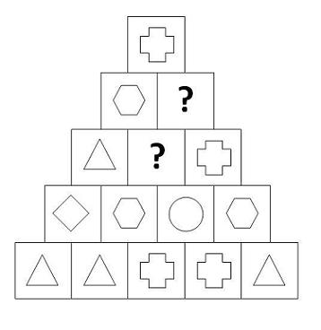
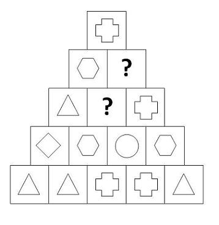

Takie rozwiązanie wynika z faktu, że figura w każdym kwadracie zależy od dwóch figur znajdujących się bezpośrednio poniżej.
Zagadka pozornie wygląda na skomplikowaną - wymagającą posłużenia się kalkulatorem
lub nawet komputerem. Można ją jednak rozwiązać nawet bez pomocy ołówka i papieru, w czasie najwyżej
trzech minut.
Jaki jest wynik podanego działania?
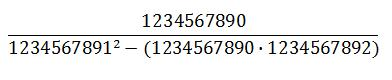
Jaki jest wynik podanego działania?
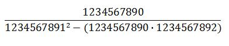
1234567890 - ponieważ działanie w mianowniku jest równe 1 (jeśli od
kwadratu dowolnej liczby odejmiemy iloczyn liczb: o 1 mniejszej i o 1 większej, to w wyniku zawsze
otrzymamy 1).
Na szufelce ułożonej z czterech zapałek leży kulka. 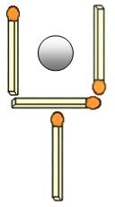 Jak
sprawić - zmieniając położenie tylko dwóch zapałek - żeby kulka znalazła się poza szufelką?
Sposób przesunięcia zapałek przedstawiony jest na poniższym rysunku:
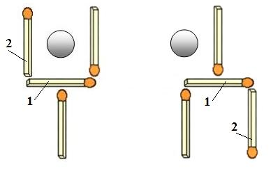
Specjalny helikopter ma odlecieć za kilka minut z transportem dziesięciu worków ze
złotymi monetami. Do pilota dotarła właśnie wiadomość, że nieuczciwi konwojenci zamienili jeden z
worków na wypełniony fałszywymi monetami. Konwojenci zostali zatrzymani z workiem prawdziwych monet,
ale przed odlotem trzeba sprawdzić wszystkie załadowane worki, znaleźć ten podrzucony i zamienić na
właściwy.
Wiadomo, że każda moneta fałszywa jest lżejsza o 1 gram od monety prawdziwej, ważącej 10 gramów.
Czy można przy pomocy jednego ważenia na elektronicznej wadze, pokazującej ciężar do 5 kilogramów, wskazać worek z fałszywymi monetami?
Wiadomo, że każda moneta fałszywa jest lżejsza o 1 gram od monety prawdziwej, ważącej 10 gramów.
Czy można przy pomocy jednego ważenia na elektronicznej wadze, pokazującej ciężar do 5 kilogramów, wskazać worek z fałszywymi monetami?
Tak, można.
Należy z pierwszego worka wziąć jedną monetę, z drugiego dwie monety, z trzeciego - trzy, i tak aż do dziesiątego worka, z którego należy wziąć 10 monet. Razem będzie to 55 monet.
Gdyby wszystkie monety były prawdziwe - waga wskazałaby ciężar 550 gramów (55⋅10 gramów). Wiadomo jednak, że nie wszystkie monety są prawdziwe, a więc wskazanie będzie mniejsze.
Jeśli np. wyniesie 547 gramów - będzie to oznaczało, że fałszywe są trzy monety (każda lżejsza o 1 gram od prawdziwej, więc 550 - 3 = 547). Szukanym workiem będzie więc worek nr 3 (z niego bowiem wzięliśmy 3 monety). Gdyby ciężar wyniósł np. 540 gramów - byłby to worek nr 10 (ponieważ 550 - 540 = 10).
Różnica ciężarów będzie więc wskazywała numer worka z fałszywymi monetami.
Należy z pierwszego worka wziąć jedną monetę, z drugiego dwie monety, z trzeciego - trzy, i tak aż do dziesiątego worka, z którego należy wziąć 10 monet. Razem będzie to 55 monet.
Gdyby wszystkie monety były prawdziwe - waga wskazałaby ciężar 550 gramów (55⋅10 gramów). Wiadomo jednak, że nie wszystkie monety są prawdziwe, a więc wskazanie będzie mniejsze.
Jeśli np. wyniesie 547 gramów - będzie to oznaczało, że fałszywe są trzy monety (każda lżejsza o 1 gram od prawdziwej, więc 550 - 3 = 547). Szukanym workiem będzie więc worek nr 3 (z niego bowiem wzięliśmy 3 monety). Gdyby ciężar wyniósł np. 540 gramów - byłby to worek nr 10 (ponieważ 550 - 540 = 10).
Różnica ciężarów będzie więc wskazywała numer worka z fałszywymi monetami.
Rzęsa wodna pokryła powierzchnię całego stawu w ciągu 30 dni. Wiadomo, że
codziennie podwajała się jej ilość.
Po ilu dniach zarośnięta została połowa powierzchni stawu?
Po ilu dniach zarośnięta została połowa powierzchni stawu?
Staw został zarośnięty w połowie dopiero po 29 dniach. Ostatniego -
trzydziestego dnia - rzęsa podwoiła swoją ilość i pokryła powierzchnię całego stawu.
Przed wyruszeniem na wycieczkę nauczyciel zebrał uczniów i chciał ich ustawić
parami, ale jeden uczeń został bez pary. Tak samo było, gdy chciał ich ustawić trójkami lub
czwórkami - zawsze zostawał jeden uczeń.
Dopiero, gdy uczniowie zostali ustawieni piątkami, żaden uczeń nie pozostał bez przydziału.
Ilu było uczniów?
Dopiero, gdy uczniowie zostali ustawieni piątkami, żaden uczeń nie pozostał bez przydziału.
Ilu było uczniów?
Uczniów było 25.
Ania jest cztery razy młodsza od swojego taty. Za 20 lat będzie młodsza już tylko
dwa razy.
Ile lat ma teraz Ania, a ile jej tata?
Ile lat ma teraz Ania, a ile jej tata?
Ania ma 10 lat, jej tata 40.
Zielone, pomarańczowe, niebieskie i fioletowe klocki zostały trzykrotnie zważone na
wadze szalkowej. Za każdym razem waga była w równowadze.
Ile klocków fioletowych zrównoważy jeden niebieski? 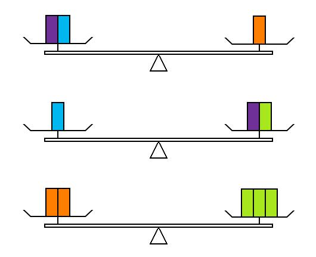
Ile klocków fioletowych zrównoważy jeden niebieski? 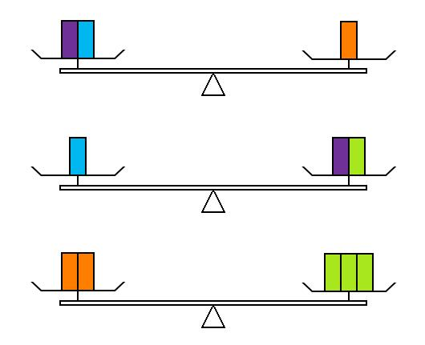
Pięć klocków fioletowych zrównoważy jeden niebieski.
W finale turnieju gry w rzutki jednemu z graczy do zwycięstwa pozostało 72 punkty.
Po wykonaniu pierwszego rzutu powiedział do swojego przeciwnika:
- Iloczyn wieku moich trzech córek wynosi dokładnie 72, a suma ich lat tyle, ile teraz trafiłem. Czy potrafisz odgadnąć, po ile mają lat?
- Niestety, mam za mało danych - odparł drugi gracz.
- Mogę Ci jeszcze powiedzieć, że moja najstarsza córka ma na imię Tamara.
- A teraz to już wiem, w jakim wieku są Twoje córki - powiedział ze smutkiem w głosie gracz obserwujący właśnie swoją przegraną.
Ile lat ma każda z córek zwycięzcy turnieju?
- Iloczyn wieku moich trzech córek wynosi dokładnie 72, a suma ich lat tyle, ile teraz trafiłem. Czy potrafisz odgadnąć, po ile mają lat?
- Niestety, mam za mało danych - odparł drugi gracz.
- Mogę Ci jeszcze powiedzieć, że moja najstarsza córka ma na imię Tamara.
- A teraz to już wiem, w jakim wieku są Twoje córki - powiedział ze smutkiem w głosie gracz obserwujący właśnie swoją przegraną.
Ile lat ma każda z córek zwycięzcy turnieju?
Najstarsza córka ma 8 lat, a pozostałe dwie po 3 lata.